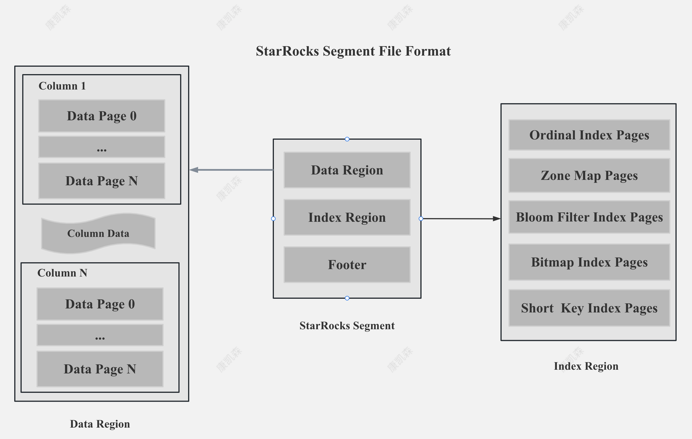

Beat SingleStore, StarRocks 数百亿数据毫秒级点查
作者: 康凯森
日期: 2023-06-03
分类: OLAP
- StarRocks Bitmap 索引加速点查原理
- StarRocks 前缀索引加速点查
- StarRocks RollUp || Materialized View 加速点查
- StarRocks Generated Column 加速点查
- 结语
支持多个任意字段过滤点查是 TP 数据库的常见需求，常见解决方案是二级索引。在最近的用户实际场景测试中，我们发现 StarRocks 在拥有3台8核CPU，32G内存，4T AWS EBS盘的集群中，可以对几百亿数据提供几十毫秒的 Hot Query 性能，1秒左右的 Cold Query 性能。
本文简单分析下 StarRocks 如何做到数百亿数据毫秒级点查，StarRocks 对下面的非主键列点查加速的主要手段是 Bitmap 索引：
select * from table where A = 1
select * from table where A = 1 and B = 2
select * from table where A = 1 or B = 2
StarRocks Bitmap 索引加速点查原理
StarRocks 支持索引的 Bitmap 索引
StarRocks Segment File

StarRocks 的 Segment 文件分为数据，索引，元数据三部分，数据和索引都是按照 Page 进行组织，一个 Page 的默认大小是 1M。
StarRocks Bitmap Index Rationale

StarRocks 的 Bitmap Index 主要包括两部分内容：字典和 Bitmap 行号。 字典保存了原始值到编码 Id的映射，Bitmap 索引记录了每个编码 ID 到 Bitmap 行号的映射。
StarRocks Bitmap Index Storage Format

如上图所示，StarRocks 的字典部分和 Bitmap 行号部分都是以 Page 的格式存储，同时为了减少内存占用和加速索引，StarRocks 对字典和 Bitmap 的 Page 都建立了索引。
当然，如果建 Bitmap 索引列的基数很低，Dict Data Page 和 Bitmap Data Page 只有一个的话，我们就不需要 Dict Index Page 和 Bitmap Index Page。
Operation On Encode Data
当 StarRocks 利用 Bitmap Index 进行过滤的时候，只需要先加载 Dict Index Page 和部分 Dict Data Page 即可，按照字典值进行快速过滤，无需解码数据，也无需把所有 Bitmap Data Page 一次性加载进来。
综上，由于 StarRocks 支持Bitmap 索引的索引和支持按照字典值进行快速过滤，即使 Bitmap Index 列的基数很高，Bitmap Index 整体磁盘存储很大，内存占用也很小。
Or 谓词支持 Bitmap 索引
由于历史原因， StarRocks 存储层的谓词下推只支持 CNF 合取范式，要求谓词是 And 连接的方式。比如对于下面的SQL：
select * from table where A = 1 and B =2
StarRocks 会分别下推谓词 A = 1 和 B = 2，最终结果取两个谓词过滤后的交集就可以，A = 1 和 B = 2 可以分别利用 A 列和 B 列上的各种索引。
但是对于下面的 Or 谓词:
select * from table where A = 1 or B =2
StarRocks 之前存储层不能下推 OR 谓词，所以需要全表扫描后再用 A = 1 or B =2 谓词取过滤数据。 为了让 Or 谓词可以利用 Bitmap 索引，最理想的方式是存储层支持 Or 谓词， A = 1 和 B = 2 分别应用 Bitmap 索引，然后行号就并集就可以，但是代码修改稍复杂，所以实现了两步走，首先第一步在FE 侧通过 SQL 改写让 OR 谓词可以利用 Bitmap 索引，接着第二步会在存储层直接支持 OR 谓词。
SQL 改写方式如下：
Bitmap 索引内存缓存

StarRocks 会保证所有的 Dict Index Page 和 Bitmap Index Page 一定在内存，并让尽可能多的 Dict Data Page 和 Bitmap Data Page 在内存，并保证 Bitmap Index 相关的 Page Cache 不被 Column 的数据冲掉。
这样在点查结果集较小的情况下，即使是第一次 Cold Query，StarRocks 也可以做到只需要一次 Disk Seek。
自适应 Bitmap 索引
当 StarRocks 发现 Bitmap 索引的选择度不高，需要 Seek 很多 Data Page 时，我们就会放弃使用 Bitmap 索引，直接顺序 Scan。
StarRocks 前缀索引加速点查
如果某个表的过滤条件肯定包含某个列时，在StarRocks 中，就不需要使用 Bitmap 索引，将该列设置为 Sort Key，使用前缀索引过滤即可。

StarRocks RollUp || Materialized View 加速点查
当 Bitmap 索引的过滤度不大，需要 Seek 很多 Data Page 时，可以考虑进一步用空间换时间，利用 StarRocks 的 RollUp 和 Materialized View 将不同的过滤列都设置成 Sort Key，利用前缀索引加速点查。
StarRocks Generated Column 加速点查
当过滤的列是 Json 或者 Map 类型的 Key 列时，在 StarRocks 中，我们可以为这个 Key 列新增一个Generated Column，然后对 Key 列建立 Bitmap 索引，通过 Bitmap 索引加速点查。
当然，之后 StarRocks 支持了对 Json 或者 Map 类型的 Key 列直接建 Bitmap 索引时，就不需要依靠 Generated Column 了。

结语
当你同时需要高性能点查，高性能 OLAP 查询，高性能 Adhoc 查询和高性能数据湖分析时，StarRocks 是你的最佳选择。
《OLAP 性能优化指南》欢迎 Star&共建
欢迎关注微信公众号